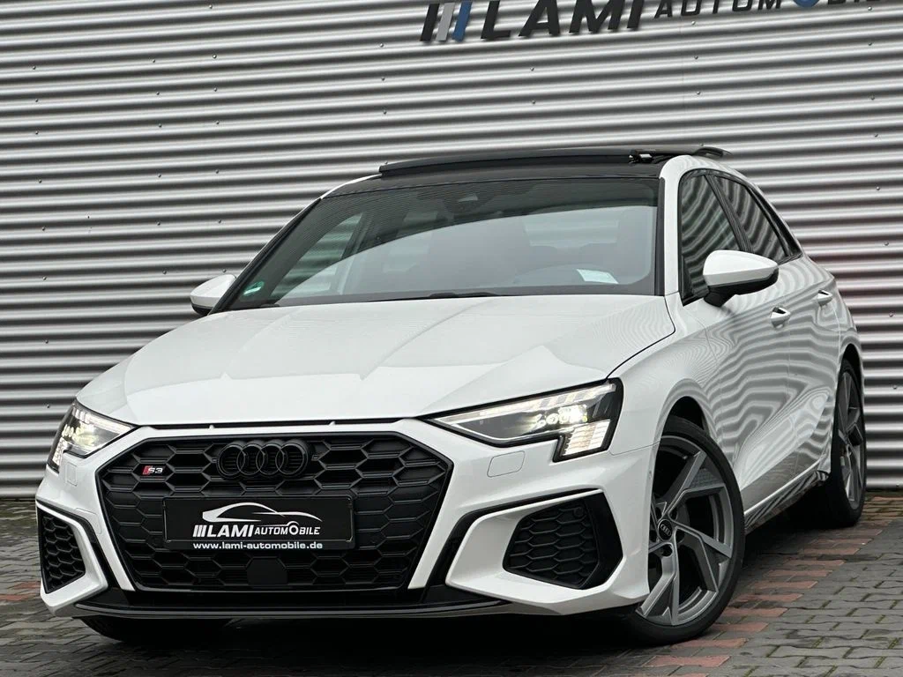

О модели
Audi S3 8Y — это мощный спортивный седан/хэтчбек с динамичным характером и интеллектуальным полным приводом.
Характеристики
Двигатель: 2.0L TFSI
Мощность: 310 л.с.
Разгон 0-100 км/ч: 4.8 сек
Максимальная скорость: 250 км/ч
Дизайн
Агрессивный бампер, спортивные выхлопные патрубки и стильные акценты в салоне, включая спортивные сиденья и алюминиевые вставки.
Более подробная информация об этой машине

Нажав по картинке выше, вы можете перейти на сайт и ознакомиться с тем, что не увидели у нас.